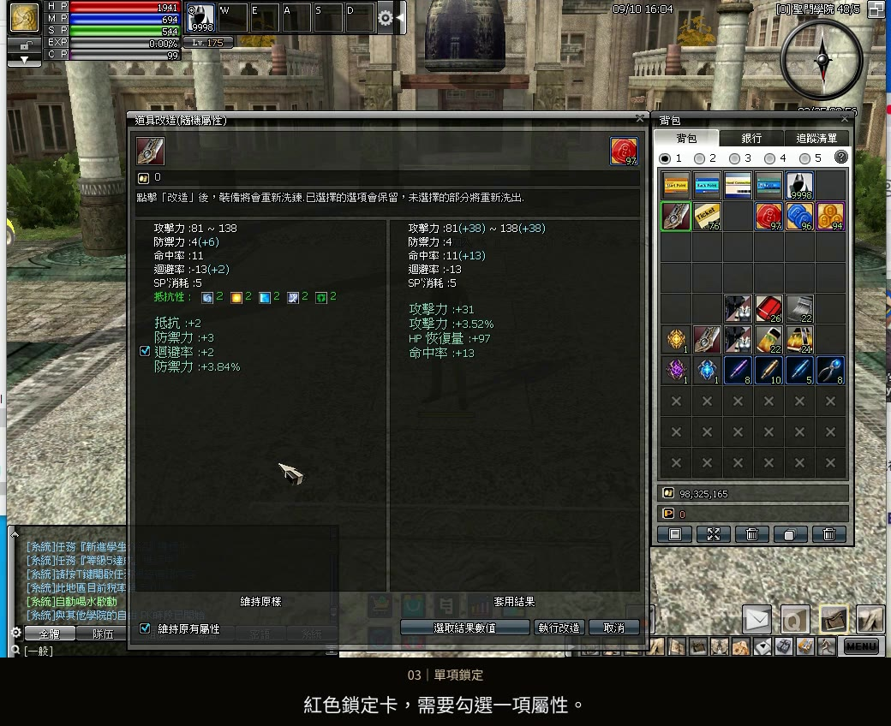
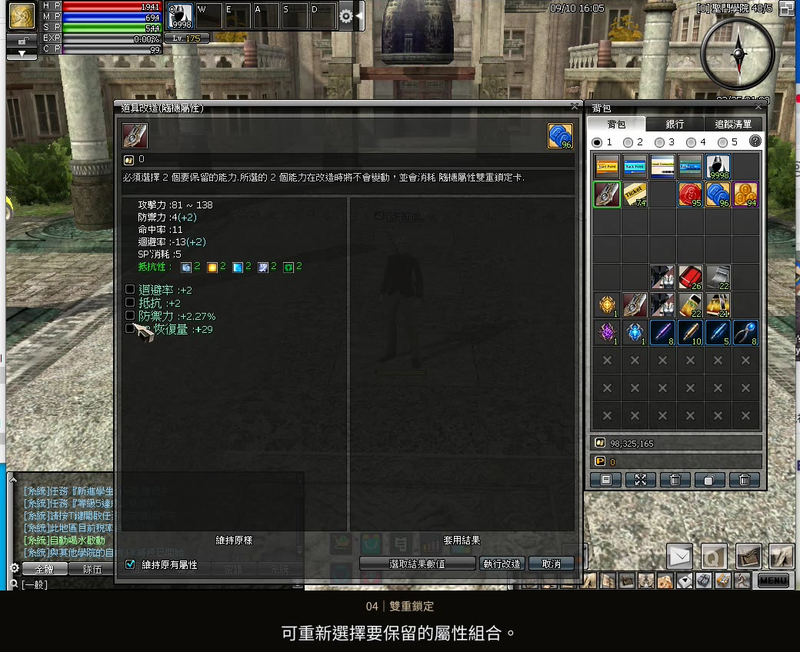
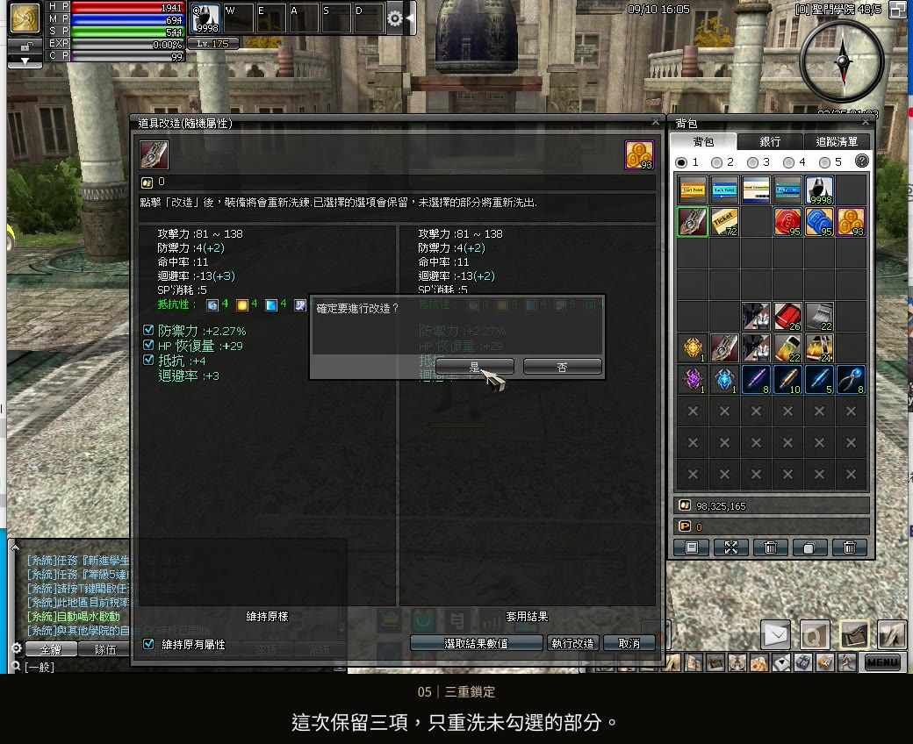

紅色・隨機屬性鎖定卡
單項鎖定：勾選一項屬性
先放入鎖定卡，再勾選一項要保留的隨機屬性。勾選的項目會保留，其餘部分重新隨機；未勾選的屬性不保證變得更好。
遊玩指南 06 / 隨機改造卡
從開啟改造視窗到套用結果，跟著實機操作了解隨機改造。
只保留勾選的項目，其餘仍重新隨機，不保證一定變強。
影片暫時無法載入，請重新整理或使用下載影片連結。下方圖文仍可查閱。
選擇章節，跳到對應操作與規則說明。
本篇比較左右結果的操作，以已勾選「維持原有屬性」為前提。每次執行改造會消耗改造卡；有使用鎖定卡，也會消耗一張對應卡片。想採用右側結果時，點選「選取結果數值」，再確認套用後的屬性。

先放入鎖定卡，再勾選一項要保留的隨機屬性。勾選的項目會保留，其餘部分重新隨機；未勾選的屬性不保證變得更好。

使用雙重鎖定卡時，需要勾選兩項。可重新選擇要保留的屬性組合；執行改造前，確認兩項都已勾選，其他部分仍會重新隨機。

使用三重鎖定卡時，需要勾選三項，只重新隨機未勾選的部分。鎖定項目數量必須符合使用的卡片；完成後，再確認保留與更新的隨機屬性。